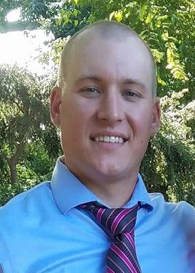

About Me
Hello! My name is Tim Albrecht, and welcome to my first site! I am currently enrolled in the UNC coding Bootcamp, and this site serves as my first in-depth assignment. So here’s a little bit about me. Take in what you like, and let me know of any constructive criticism you may have for the page. I’m still very new to html/css, and trying to soak up as much as I can.
I have been a resident of Chapel Hill for the last 12 years. I started as an undergraduate at UNC, where I received a BS in Environmental Sciences. I then moved on to be a staff environmental scientist with RTI International for the next four years. My work focused on federal contracts with the EPA, FDA, DoE, and NOAA. A new opportunity arose, and I chose to leave RTI to start my own Fiber Optic Company, which I actively operated for the past three years. However, I came to miss my previous passions, as well as the limited home time, so opted to return to the environmental sector.
I am lucky enough to have married my high school sweetheart, Sarah. She was there with me to take my first steps on campus, and has somehow already put up with me for over 12 years. Together we live with our two dogs, Roxy and Pepper, in rural Chapel Hill. (Close to Maple View. Yes, the ice cream place).